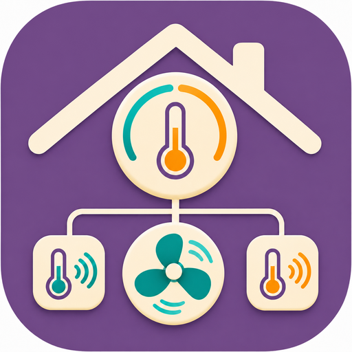

<link rel="stylesheet" href="styles.css" />
<main>
  <header>
    
    <div>
      <h1>Nest Climate Cntrl</h1>
      <p>Comfort, controls, and a clearer view of your home.</p>
    </div>
    <span id="live-status" class="pill" role="status">Connecting…</span>
  </header>
  <div id="notice" role="status" class="notice" hidden></div>
  <nav aria-label="Configuration sections">
    <a href="#account">Account</a><a href="#thermostats">Thermostats</a><a href="#sensors">Sensors &amp; Heat Link</a
    ><a href="#room-preview">Room sensors &amp; fans</a>
    <a href="#features">Apple Home</a><a href="#schedule">Schedule</a><a href="#runtime">Runtime</a><a href="#diagnostics">Diagnostics</a>
  </nav>
  <section id="account" class="panel">
    <div class="heading">
      <div>
        <h2>Account</h2>
        <p>Connect with your existing Nest or Google credentials.</p>
      </div>
      <button id="add-account" type="button">Add account</button>
    </div>
    <div id="accounts"></div>
    <p class="help">
      Legacy refresh tokens must already be valid. This plugin cannot create new legacy tokens.
      <a href="https://github.com/pponce/homebridge-nest-accfactory-plus#configuration" target="_blank" rel="noopener noreferrer"
        >Credential setup guide ↗</a
      >
    </p>
  </section>
  <section id="thermostats" class="panel">
    <div class="heading">
      <div>
        <h2>Thermostats</h2>
        <p>Live readings from the running Nest bridge.</p>
      </div>
      <button id="refresh" type="button">Refresh status</button>
    </div>
    <div id="device-cards" class="cards"><p>Waiting for thermostat data…</p></div>
  </section>
  <section id="sensors" class="panel">
    <h2>Sensors &amp; Heat Link</h2>
    <p>Choose the temperature source and review your heating accessories.</p>
    <div id="sensor-controls"></div>
    <div id="sensor-cards" class="cards"></div>
    <div id="heatlink-cards" class="cards"></div>
  </section>
  <section id="room-preview" class="panel"></section>
  <section id="features" class="panel">
    <h2>Apple Home features</h2>
    <p>Choose which optional controls appear in Apple Home. Save configuration and restart the Nest bridge to apply changes.</p>
    <label class="check"><input id="eve-history" type="checkbox" />Enable Eve history by default</label>
    <div id="device-settings"></div>
    <details>
      <summary>Home settings</summary>
      <div id="homes"></div>
      <button id="add-home" type="button">Add home</button>
    </details>
  </section>
  <section id="schedule" class="panel">
    <div class="heading">
      <div>
        <h2>Schedule</h2>
        <p>Nest's reported weekly setpoints. Eco, holds, and learning may affect what happens next.</p>
      </div>
      <label>Thermostat<select id="selected-device"></select></label>
    </div>
    <p id="next-change"></p>
    <div class="table-wrap">
      <table>
        <caption class="sr-only">
          Weekly thermostat schedule
        </caption>
        <thead>
          <tr>
            <th>Day</th>
            <th>Time</th>
            <th>Heat</th>
            <th>Cool</th>
          </tr>
        </thead>
        <tbody id="schedule-rows"></tbody>
      </table>
    </div>
  </section>
  <section id="runtime" class="panel">
    <h2>Runtime</h2>
    <p>Observed heating and cooling over the last seven UTC days. Gaps are unknown, not zero usage. Runtime is not energy consumption.</p>
    <div id="runtime-chart" class="chart"></div>
    <div class="table-wrap">
      <table>
        <caption>
          Observed runtime and coverage
        </caption>
        <thead>
          <tr>
            <th>Date (UTC)</th>
            <th>Heating</th>
            <th>Cooling</th>
            <th>Observed</th>
          </tr>
        </thead>
        <tbody id="runtime-rows"></tbody>
      </table>
    </div>
  </section>
  <section id="diagnostics" class="panel">
    <div class="heading">
      <div>
        <h2>Diagnostics</h2>
        <p>Account authorization and device updates are reported separately.</p>
      </div>
      <button id="copy-diagnostics" type="button">Copy safe diagnostics</button>
    </div>
    <div id="connection-details"></div>
    <details>
      <summary>Advanced troubleshooting</summary>
      <label class="check"><input id="debug" type="checkbox" />Verbose logging</label
      ><label class="check"><input id="support-dump" type="checkbox" />Redacted support dumps</label>
      <p class="help">Use only while diagnosing a problem. Normal logs may include device names.</p>
      <button id="schema-form" type="button">Open full configuration form</button>
    </details>
  </section>
  <footer>
    <span id="save-state" role="status">Configuration loaded</span>
    <p>Use Homebridge's Save button to save configuration, then restart the Nest bridge. Live action buttons send commands immediately.</p>
    <small
      >Independently maintained by pponce. Based on
      <a href="https://github.com/n0rt0nthec4t/homebridge-nest-accfactory" target="_blank" rel="noopener noreferrer"
        >Nest Accfactory by n0rt0nthec4t</a
      >.</small
    >
  </footer>
</main>
<script type="module" src="index.js"></script>

